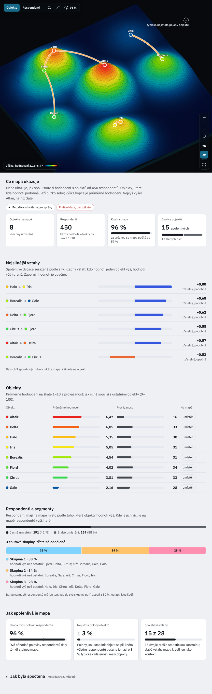
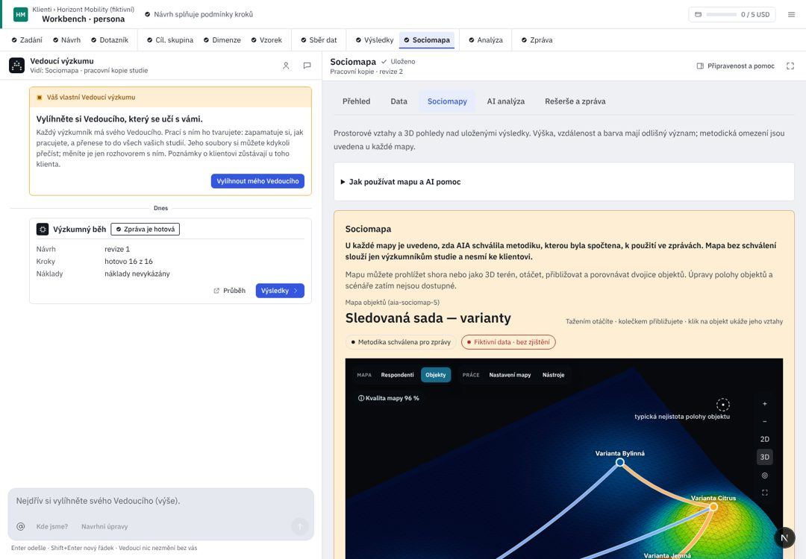

Klienti / Pivovar Zlatá Hora
Vnímání značek ležáků 2026
Přesný snímek schválené Sociomapy návrhové dílny (zaměřeno na mapu, nové překryvy), jejími fiktivními daty. Mapa, její ovládání a výklad pod ní se v tomto prototypu nepřekreslují; na develop je přináší PR #815.

UX kritika · Sociomapa
Krok se nepřekresluje: schválená dílna (PR #815) už řeší mapu zakrytou překryvy a výklad rozházený po čipech. Kritika níže je dnešní develop a body, které zbývají i po #815. Kód d5d36b25; R/ = apps/web/src/components/rehome/research/.
Dnes v AIA (workbench, 1440 px)

{{c.l}}{{c.t}}
- {{x.t}}{{x.a}}